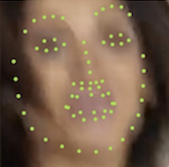

FAB: A Robust Facial Landmark Detection Framework for Motion-Blurred Videos
Abstract
Recently, facial landmark detection algorithms have achieved remarkable performance on static images. However, these algorithms are neither accurate nor stable in motion-blurred videos. The missing of structure information makes it difficult for state-of-the-art facial landmark detection algorithms to yield good results. In this paper, we propose a framework named FAB that takes advantage of structure consistency in the temporal dimension for facial landmark detection in motion-blurred videos. A structure predictor is proposed to predict the missing face structural information temporally, which serves as a geometry prior. This allows our framework to work as a virtuous circle. On one hand, the geometry prior helps our structure-aware deblurring network generates high quality deblurred images which lead to better landmark detection results. On the other hand, better landmark detection results help structure predictor generate better geometry prior for the next frame. Moreover, it is a flexible video-based framework that can incorporate any static image-based methods to provide a performance boost on video datasets. Extensive experiments on Blurred-300VW, the proposed Real-world Motion Blur (RWMB) datasets and 300VW demonstrate the superior performance to the state-of-the-art methods. Datasets and models will be publicly available at https://keqiangsun.github.io/projects/FAB/FAB.html.
Demo
Downloads
-

RWMB Dataset

Citation
@inproceedings{keqiang2019fab,
author = {Sun, Keqiang and Wu, Wayne and Liu, Tinghao and Yang, Shuo and Wang, Quan and Zhou, Qiang and and Ye, Zuochang and Qian, Chen},
title = {FAB: A Robust Facial Landmark Detection Framework for Motion-Blurred Videos},
booktitle = {ICCV},
month = October,
year = {2019}
}